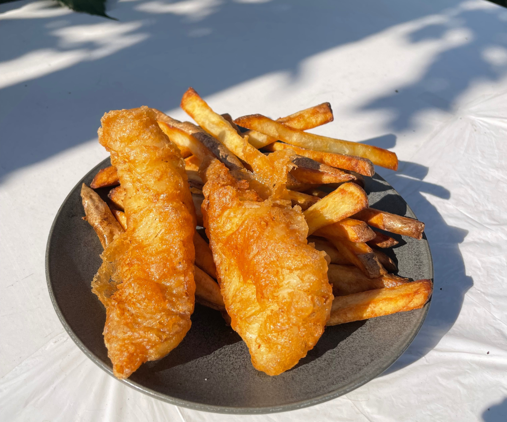

Fish`n chips

Description
Fish 'n chips is a beloved British dish consisting of battered and deep-fried fish, typically cod or haddock,
served with thick-cut fried potatoes (chips). It is often accompanied by sides like mushy peas, tartar sauce,
or a wedge of lemon for added flavor. This iconic meal is traditionally wrapped in paper and enjoyed as a takeaway dish,
offering a satisfying combination of crispy and savory flavors.
Ingredients
- 2 large potatoes, cut into thick chips
- 2 cod or haddock fillets
- 1 cup flour (plus extra for coating)
- 1 tsp baking powder
- 1 cup cold beer or sparkling water
- salt and pepper to taste
- Oil for frying
Steps
- Soak the chips in cold water for 30 minutes, then pat dry.
- Heat oil to 300°F (150°C) and fry chips for 5 minutes. Remove and drain.
- Increase oil to 375°F (190°C). Mix flour, baking powder, salt, pepper, and beer to make batter.
- Coat fish in flour, dip in batter, and fry for 6-8 minutes until golden.
- Fry chips again at 375°F until crispy.
- Serve fish and chips with tartar sauce, lemon, and salt.
- Enjoy!
Home